Ejercicios interactivos de ángulos en la circunferencia
Elige la opción correcta:
1Dos cuadrantes consecutivos forman un ángulo central de...
2La medida del arco que se define al trazar el ángulo anterior es de...
3Un ángulo inscrito que abarca un arco de 30°...
4Un ángulo inscrito de 20º define un arco de...
5Los lados y las prolongaciones de un ángulo interior forman un arco de 130° y otro de 60°, entonces dicho ángulo mide...
6La diferencia entre las medidas de los arcos que abarcan los lados de un ángulo sobre la circunferencia es de 70°, entonces la medida del ángulo es...
7Uno de los arcos que abarcan los lados de un ángulo exterior sobre la circunferencia es de 70°, entonces la medida del ángulo es...
8El arco menor que define un ángulo exterior sobre la circunferencia es de 50° y la medida de dicho ángulo es de 30°, entonces la medida del otro arco que describe dicho ángulo es de...
Si llamamos x al valor del arco que buscamos, por ser un ángulo exterior tendremos:
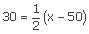
Para que la segunda parte de la igualdad sea igual a 30 se tendrá que verificar que la expresión entre paréntesis sea igual a 60. Así, probando podemos obtener que x = 110
9Si un ángulo semiinscrito mide 82°, el arco que forma mide...
10Un ángulo interior mide 60° y uno de los arcos que determina es de 40°, entonces el otro arco mide...
Si llamamos x al valor del arco que buscamos, por ser un ángulo interior tendremos:
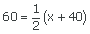
Para que la segunda parte de la igualdad sea igual a 60 se tendrá que verificar que la expresión entre paréntesis sea igual a 120. Así, probando podemos obtener que x = 80
Resuelve las siguientes cuestiones:
11Si dividimos una circunferencia en 5 arcos iguales, ¿cuánto mide cada uno de esos arcos?
°
¿Y cada una de los ángulos centrales correspondientes a dichos arcos?
°
Como la circunferencia completa son 360º, si dividimos la circunferencia en 5 arcos iguales cada uno de ellos medirá 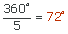
Los ángulos centrales correspondientes a dichos arcos miden lo mismo que los arcos, es decir 72º.
12Si dividimos la circunferencia en partes iguales y el ángulo central de cada una de las partes es de 36º, ¿en cuántas partes se ha dividido la circunferencia?
º
Sabemos que la circunferencia completa son 360º, por tanto dividiendo 360º entre 36º obtenemos las partes en las que se ha dividido la circunferencia, 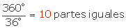
13Indica las medidas de los ángulos que faltan.
º
º
 En la primera circunferencia queremos calcular el ángulo que falta, por tanto:
En la primera circunferencia queremos calcular el ángulo que falta, por tanto:
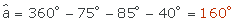
 En la segunda circunferencia queremos calcular cada uno de los ángulos iguales en los que está dividida la circunferencia, por tanto como son 8 partes iguales:
En la segunda circunferencia queremos calcular cada uno de los ángulos iguales en los que está dividida la circunferencia, por tanto como son 8 partes iguales:
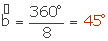
14Calcular el valor del ángulo que falta en cada una de las circunferencias siguientes
º
º
 Circunferencia naranja
Circunferencia naranja
El ángulo es el suplementario de , por tanto mide 150º.
El triángulo CAO es isósceles ya que tiene dos lados iguales (los radios). Por tanto los otros dos ángulos son iguales y miden 15º
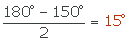 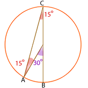
 Circunferencia roja
Circunferencia roja
El ángulo  mide 35º, como el triángulo ACO es isósceles, ya que dos de sus lados son los radios (por tanto iguales). Como los lados de un triángulo deben sumar 180º los ángulos del triángulo miden 35º, 35º y 110º
mide 35º, como el triángulo ACO es isósceles, ya que dos de sus lados son los radios (por tanto iguales). Como los lados de un triángulo deben sumar 180º los ángulos del triángulo miden 35º, 35º y 110º
El ángulo mide 70º porque es el suplementario de 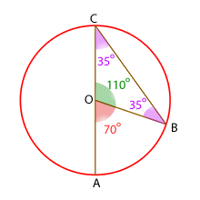
En ambos casos el ángulo central mide el doble que el ángulo inscrito 
15Calcula los ángulos inscritos de las siguientes figuras
º
º
 Como el ángulo es inscrito medirá:
Como el ángulo es inscrito medirá:
= 80º : 2 = 40º
 El ángulo como es inscrito mide la mitad del arco que abarca. Puede verse en la figura que el arco abarcado mide 50º, por tanto
El ángulo como es inscrito mide la mitad del arco que abarca. Puede verse en la figura que el arco abarcado mide 50º, por tanto
= 50º : 2 = 25º
16La circunferencia de la figura se ha dividido en 6 partes iguales, calcula la medida del ángulo interior
 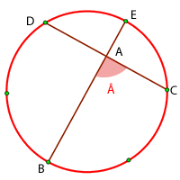 º
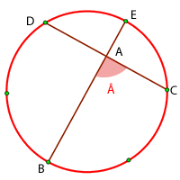 º
En la siguiente circunferencia se muestran las medidas de los arcos interiores de un ángulo interior y su opuesto. Calcula la medida del ángulo
 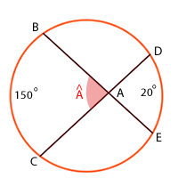 º
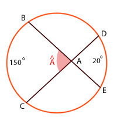 º
 Como la circunferencia está dividida en 6 partes iguales, cada parte mide 360º : 6 = 60º. Si unimos D con B obtenemos el triángulo BAD del cual conocemos los siguientes ángulos:
Como la circunferencia está dividida en 6 partes iguales, cada parte mide 360º : 6 = 60º. Si unimos D con B obtenemos el triángulo BAD del cual conocemos los siguientes ángulos:
= 30º ya que es un ángulo inscrito y su arco es una división
= 60º ya que es un ángulo inscrito y su arco son dos divisiones
Entonces: = 180º − (30º + 60º) = 90º
Como y son suplementarios = 90º
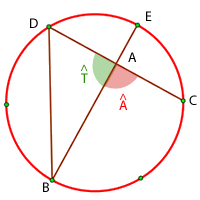
 Sabemos que es un ángulo inscrito cuyo arco vale 20º, por tanto mide 10º
Sabemos que es un ángulo inscrito cuyo arco vale 20º, por tanto mide 10º
= 75º por ser un ángulo inscrito cuyo arco vale 150º
= 180º − 10º − 75º = 95º
Como y son suplementarios = 85º
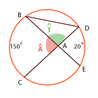
Si tienes dudas puedes consultar la teoría